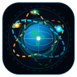

AstroTrack
ORBIT LIVE
Real-Time Multi-Satellite Tracker • [1A] ISS • [1B] Tiangong • [1C] Cartosat-3 (ISRO 🇮🇳)
☀️
Light Mode
● LIVE NORAD TELEMETRY
UTC: --:--:--
🛰️
3D Orbital Separation:
ISS ↔
Tiangong
:
Calculating...
ISS ↔
Cartosat-3
🇮🇳:
Calculating...
1A
ISS (Space Station)
NASA • ESA • JAXA • Roscosmos | #25544
🎯 Focus
Latitude
--.----°
Longitude
--.----°
Altitude
--- km
Velocity
--,-- km/h
☀️ Daylight
Inclination: 51.6°
1B
Tiangong Space Station
Hubble Space Telescope
CNSA (China) | NORAD #48274
🎯 Focus
Latitude
--.----°
Longitude
--.----°
Altitude
--- km
Velocity
--,-- km/h
🛰️ Active LEO
Inclination: 41.5°
1C
Cartosat-3 (ISRO 🇮🇳)
RISAT-2BR1 (ISRO 🇮🇳)
ISRO (India) | NORAD #44804
🎯 Focus
Latitude
--.----°
Longitude
--.----°
Altitude
--- km
Velocity
--,-- km/h
🛰️ Sun-Sync Polar
Inclination: 97.4°
🛰️ Fit All [1A, 1B, 1C]
Follow ISS
Follow Tiangong
Follow Cartosat-3 🇮🇳
🧹 Clear Trails
🎥 Live Earth Cam
🌌 Switch Map Style
⠿
Live 4K Earth Cam
Sen 4K ISS Cam
ISS Live 24/7
NASA HD Earth
↗
🗕
✕
[1A] ISS:
Cyan Orbit (51.6° Inclination)
[1B] Tiangong / Hubble:
Amber Orbit (41.5° Inclination)
[1C] Cartosat-3 / RISAT (ISRO 🇮🇳):
Emerald Polar Orbit (97.4° Inclination)
✅ Real NASA & ISRO CelesTrak NORAD Telemetry